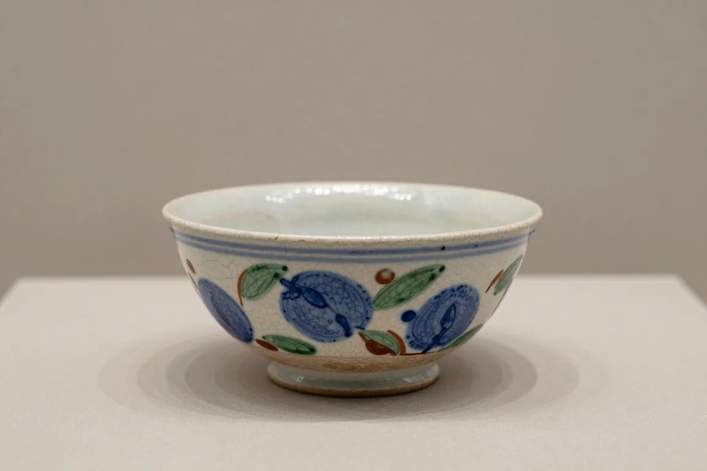

керамика · 1840–1930 · также: Брызганая посуда, Гончарная посуда с губчатым декором, Экспортная посуда с губкой
Дешёвая белая гончарная посуда, которую гончары прикладывали срезанной морской губкой, окунутой в краску. Мягкая синяя или зелёная крапчатость покрывает миску, кувшин или банку почти без мастерства.

Главная идея
Губка за несколько секунд превращает дешёвый белый горшок в цветной, так что необученный работник может украсить сотню вещей за час.
Принципы дизайна
Делайте простой горшок с белым черепком в форме или на джиггере, со стенкой 4–6 мм.
Прикладывайте цвет к утилю срезанной губкой, окунутой в краситель; берите 1–4 цвета.
Штампуйте губкой узор из точек или прикладывайте её свободной крапчатостью.
Оставляйте простой белый пояс у борта и поддона для контраста.
Берите сначала синий, затем зелёный, коричневый и красный; в некоторых вещах добавляйте линию или цветок, нарисованные вручную.
Окунайте горшок в прозрачную глазурь и обжигайте примерно при 1050–1100 °C.
Делайте полезные формы: миска для замеса, кувшин, маслёнка и банка.